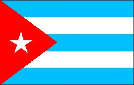
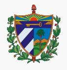

Cuba
|  |  |
Información general
Nombre oficial: República de Cuba
Área: 10922 km²
Costas: 3735 km
La isla de Cuba es la mayor de las Antillas. La república de Cuba esta constituida por esta, por la Isla de la Juventud (2 200 km²), denominada antes Isla de Pinos y por otras islas menores.
División política: 14 Provincias y un municipio especial
Provincia Capital
- Camagüey Camagüey
- Ciego de Ávila Ciego de Ávila
- Cienfuegos Cienfuegos
- Ciudad de la Habana Habana (Capital)
- Granma Bayamo
- Guantánamo Guantánamo
- Holguín Holguín
- La Habana (*)
- Las Tunas Victoria de las Tunas
- Matanzas Matanzas
- Pinar del Río Pinar del Río
- Sancti Spíritus Sancti Spíritus
- Stgo. de Cuba Stgo. de Cuba
- Villa Clara Santa Clara
- Municipio Isla de la Juventud Nueva Gerona
(*) No incluye la capital
Unidad monetaria: Peso
1 Peso = 100 centavos
Idiomas: Español (oficial); muy pequeñas comunidades de origen extranjero hablan también chino, inglés (no oficiales)
Fiesta nacional: 1 de enero, Día de la Liberación
Gentilicio: Cubano
Hora oficial: GMT -5 horas (normal); GMT -4 horas (verano)
Miembro de: ONU, OEA (suspendido), ALADI (observador), SELA
Curiosidades
En Cuba viven algunos de los animales más pequeños del mundo como la ranita o esmíntilo, el almiquí y el colibrí abeja, llamado zunzuncito.
Información adicional en Internet.
Perfil
Ecónomico
Perfil Demográfico
Población: 11.269.000 hab.
Densidad de población: 101 (hab/km²)
Perfil Cultural
Alfabetismo: 96%
Religión:
- No religiosos: 63,7%
- Católicos: 25,6%
- Criptocristianos: 9,1%
- Protestantes: 0,6%
- Otros: 1,0%
Algunas figuras notables:
- José Martí (1853-1895). Pensador político, revolucionario, escritor y poeta
- Julián del Casal (1863-1893). Poeta y escritor
- Gertrudis Gómez de Avellaneda (1814-1873). Novelista, poetisa y dramaturga
- Nicolás Guillén (1902-1989). Poeta
- José María Heredia (1803-1839). Poeta
- Dulce María Loynaz (1903-1997). Poetisa y escritora. Premio Cervantes 1996
- Guillermo Cabrera Infante (1929). Premio Cervantes 1998
- Alejo Carpentier (1904-1980). Escritor
- Carlos J. Finlay (1883-1915). Médico e investigador
- Wilfredo Lam (1902-1982). Pintor
- Ernesto Lecuona (1896-1963). Compositor
- Alicia Alonso (1923). Bailarina
Lugares declarados patrimonio mundial por la UNESCO
- La Habana (Ciudad Vieja y fortificaciones).
- Trinidad y el Valle de los Ingenios.
Sistema de Gobierno
Constitución vigente: Febrero de 1976 (enmendada en julio de 1992)
Sistema ejecutivo: Consejo de Estado (treinta y un miembros nombrados por y de entre los miembros de la Asamblea Nacional del Poder Popular). El presidente del Consejo es Jefe de Estado y del Gobierno o Consejo de Ministros.
Sistema legislativo: Asamblea Nacional del Poder Popular (589 diputados) y Asambleas locales (elegidos por sufragio directo por cinco años).
Sistema judicial: Tribunal Supremo Popular. Los tribunales provinciales y municipales están subordinados al Tribunal Supremo Popular.
Gobierno subdivisional: Las catorce provincias del país tienen Asambleas Provinciales; los 169 municipios y el municipio especial de la Isla de la Juventud tienen Asambleas Municipales.
Aproximación histórica
Cuba es la mayor de las Antillas. Situada a la entrada del Golfo de México, con unos 1 200 kilómetros de largo, cerca de 1300 cayos e islotes integran su territorio. Sus 3 500 kilómetros de costa forman en algunos sectores puertos naturales excelentes como: La Habana, Matanzas y Santiago de Cuba.
Ocupada originalmente por dos pueblos indígenas: los taínos y los siboneyes, fue descubierta por Colón en su primer viaje. Los movimientos emancipatorios conducen a una primera guerra contra España en 1868 y que dura 10 años. Bajo la dirección de José Martí se funda el Partido Revolucionario Cubano y en 1895 estalla una segunda guerra de independencia. Los Estados Unidos de Norteamérica entran en la guerra con España en 1897 y al concluir esta, la isla queda bajo la autoridad de un gobernador militar norteamericano hasta 1902. La república se instaura ese año, pero el Congreso de los Estados Unidos vota la denominada Enmienda Platt que exigía el reconocimiento del derecho del gobierno norteamericano a intervenir en la isla. En 1952 se produce un golpe de estado y ocupa el poder Fulgencio Batista. La lucha contra este culmina en 1959 en que triunfa el movimiento guerrillero dirigido por Fidel Castro. En 1961 se produce la invasión de 1 500 cubanos exiliados.
Fidel Castro proclama el carácter socialista de la Revolución y las fuerzas cubanas derrotan esta invasión. Posteriormente quedó evidenciado que ésta fue organizada y financiada por la Agencia Central de Inteligencia (CIA) de los Estados Unidos. En el año 1962 el enfrentamiento con el gobierno norteamericano alcanza un punto máximo en la "denominada crisis de los cohetes", cuando vuelos de inteligencia norteamericanos sobre la isla verifican la construcción de instalaciones para cohetes nucleares en esta. Después de dos semanas de tensión mundial, el presidente norteamericano John F. Kennedy llega a acuerdos con el gobierno soviético dirigido por Nikita Khrushchev, para la retirada de los cohetes.
La proclamación del carácter socialista trajo como consecuencias transformaciones sociales, económicas y políticas dictándose una ley de reforma agraria y la nacionalización de compañías que eran de propiedad norteamericana. Esta medida llevó a los Estados Unidos a tender un bloqueo económico a la isla que se mantiene hasta nuestros días. La situación política ha motivado una emigración creciente, con cerca de dos millones de cubanos en el exterior, fundamentalmente en Estados Unidos.
En Enero de 1998 se produce la transcendental visita del Papa Juan Pablo II a Cuba que en una de sus intervenciones públicas en la Habana proclama que "el mundo debe abrirse a Cuba y Cuba debe abrirse al mundo".
Las exportaciones principales de Cuba giran en torno al azúcar, níquel y tabaco, con un incremento del turismo en los últimos años.
Su capital La Habana con unos 2 millones de habitantes es un centro cultural de importancia en la región.
«-- ir al comienzo
«-- regresar